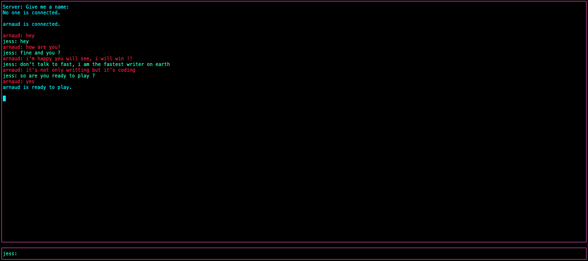
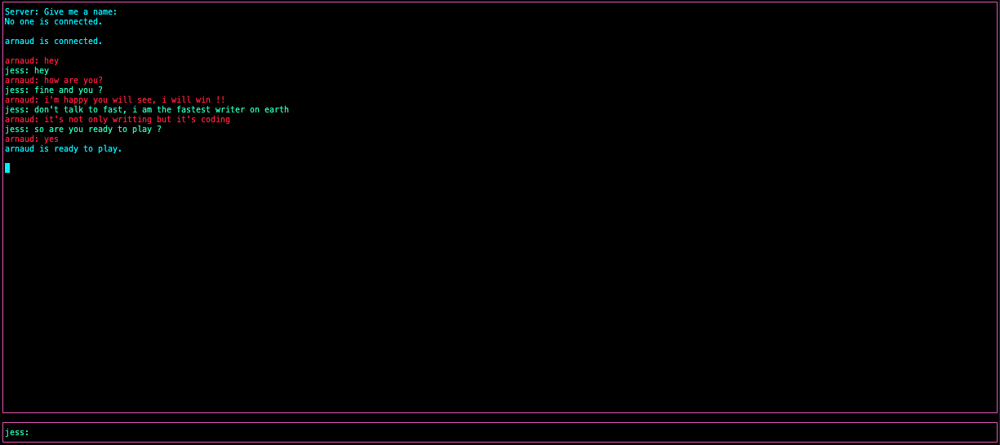

Un chat interactif
Un chat interactif
Notre chat est un outil de communication dans le jeu. Les messages du joueur sont verts, ceux de l'autre joueur sont rouges et ceux du serveur sont bleus. Le serveur informe s'il n'y a pas de joueur connecté. Quand les deux joueurs écrivent "ready", le jeu commence.